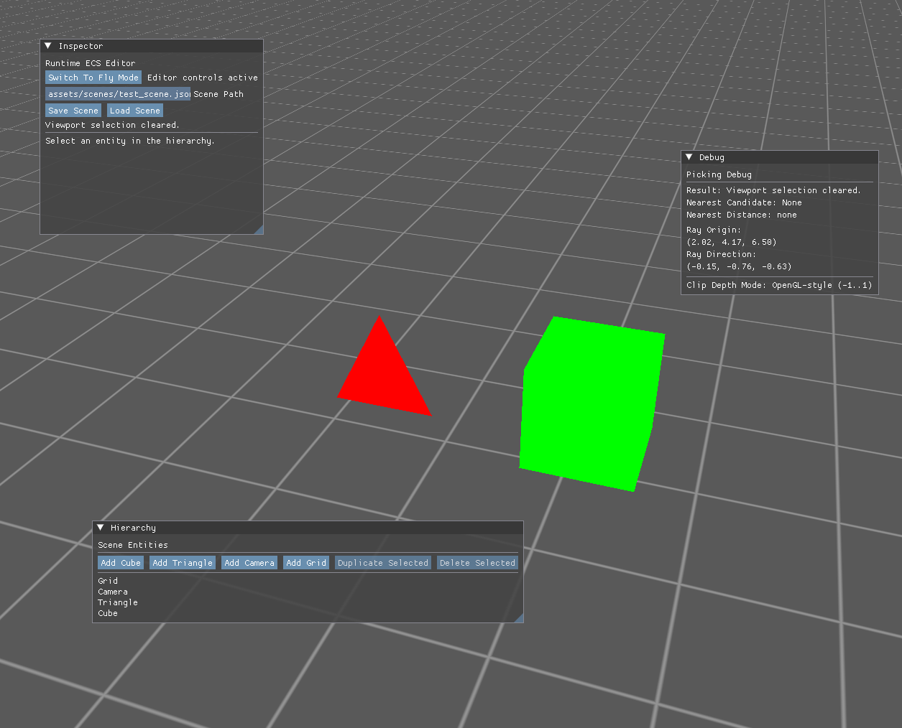
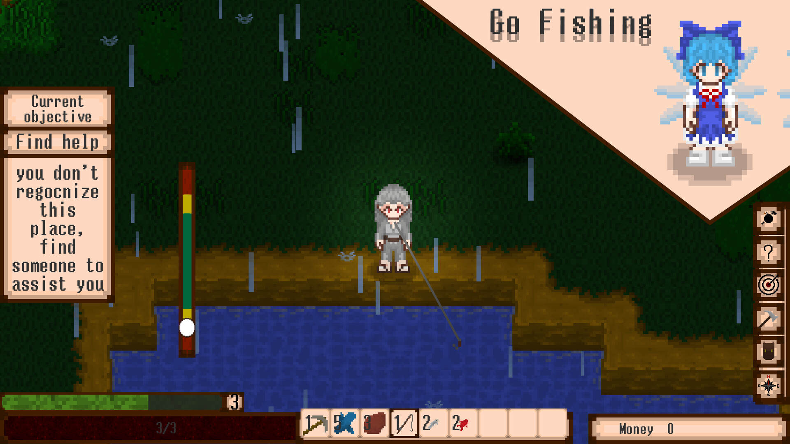
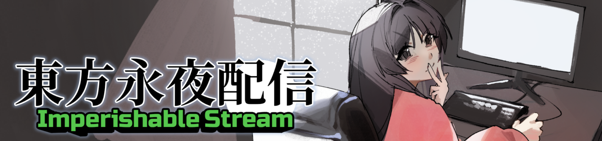
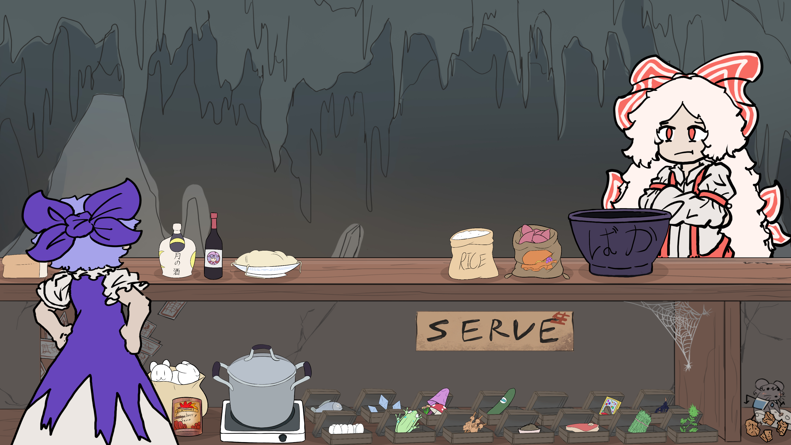

Passionate about low-level rendering, engine architecture, and real-time systems. I write C++ engines before I write games.
A selection of personal projects and prototypes.

A modular, data-oriented game engine prototype built entirely from scratch in C++20 using the Vulkan graphics API. Designed around a custom Entity Component System with a clean two-project workspace: a reusable static library engine and a sandbox game that consumes it, similar to how Unity separates runtime from editor scripting.

A 2D top-down adventure game built in Unity, blending bullet-hell combat with farming, crafting, fishing, and dialogue systems. Released on Steam for $4.99, with Steamworks integration for community features, cloud saves, and updates.

A fast-paced, multi-tasking game jam project built in 72 hours with a team of 13 people for the Touhou Game Jam 2026. Play as Princess Kaguya trying to stream gameplay while multitasking chores, chat moderation, and keeping roommates at bay.

A comical 2D point-and-click cooking game built in 72 hours for the Touhou Fan Game Jam 11. Play as Cirno attempting to cook meals that will impress (or accidentally kill) Fujiwara no Mokou using various ingredients and recipes.